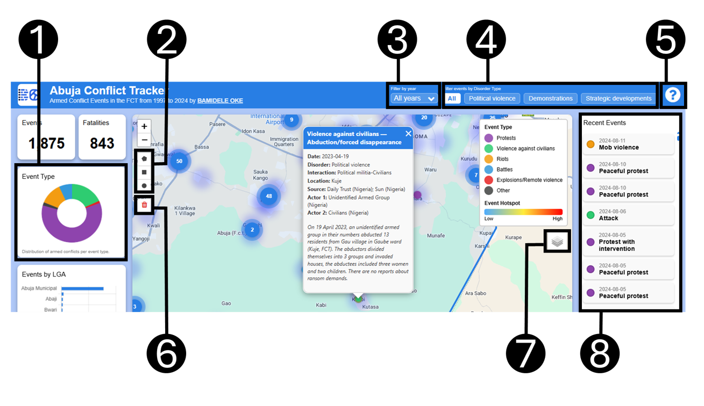

This interactive web mapping application visualizes armed conflict and political violence incidents in the Federal Capital Territory (FCT) of Nigeria from 1997 to 2024. Data is sourced from the Armed Conflict Location & Event Data Project (ACLED) and includes event type, location, actors, fatalities, and detailed context. While the application is thoughtfully designed to be user friendly, the information below provides a brief overview of how to use the application effectively.
How to use

- The chart shows the distribution of armed conflicts by event type. You can click the chart slices to filter the data. To clear the filter, click the chart again.
- Just below the zoom controls, there are three drawing tools, you can use them to draw a shape over the map and filter the data with the features within the shape.
- The year filter allows you to filter the data for a specific year. This can help you to understand how things played out in a specific year.
- ACLED have categorized the data based on the type of disorder. It is with great pleasure that I added a filter using the disorder type.
- While this welcome page is essential and nicely designed, I believe that is not the highlight so when you click "Don't show this again" below, the dialog will respect that choice. However, if you ever forget how things work, click this help button and it will display the help page again.
- This is my favorite button in this application. It clears every filter, drawn shape, and map navigation. It restores the application to the default view as if it was first loaded. If you think its no longer working, refresh the browser page, there is no reset better than that!
- This is the common layer list widget, I didn't want to make a big deal about it but it is essential because you may want to change the basemap or display the heatmap and turn off the events layer.
- On the right side of the map, you will find a list of recent events. You can click on any event to see its details.
- Finally (this one is not in the diagram so don't look up), the map is interactive. You can click on any point to see the details of the event. You can also zoom in and out using the zoom controls or your mouse wheel.
Credits
- Data © ACLED
- Basemaps from Google, Esri, and OpenStreetMap
- Charts powered by Chart.js, plus plugins (Sankey and Radar)